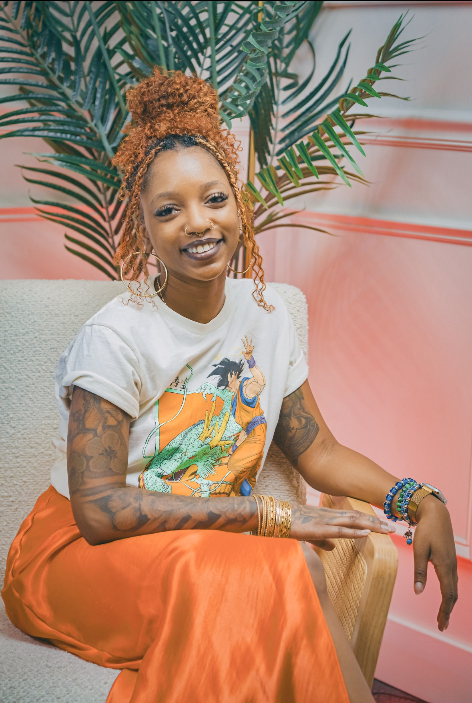

TECH
Years of working in SaaS and digital products taught me how to troubleshoot, understand users and think about the experience behind the screen.
I'm an Atlanta-based content creator, storyteller and creative who's always been a little hard to put in one box — so I stopped trying.
My world sits somewhere between tech, design, content, photography, video editing and documenting what it looks like to build a creative life in real time.

Brooklyn raised.
Atlanta based.
Always creating.
My path has never been one straight line. I've worked in tech, designed digital experiences, built websites, picked up a camera, edited videos, started a creative business and documented a lot of it along the way.
For a long time, all of those things felt like separate parts of my life. Vibe with Sammi became the place where they could actually live together.
I create around tech, lifestyle and creative entrepreneurship, but the common thread is storytelling. I like showing the process, the personality and the little moments that make people feel like they were actually there.
A few things that make the rest of this website make more sense.
None of these were random detours. They all became part of how I create now.
Years of working in SaaS and digital products taught me how to troubleshoot, understand users and think about the experience behind the screen.
That curiosity grew into product design, web design and building digital experiences instead of only supporting them.
I started sharing more of what I was learning, making and experiencing — and realized I loved turning real life into a story.
The camera gave me another way to tell those stories, from live events and culture to behind-the-scenes moments and edits.
Now all of it has one home: a space for the things I create, the things I'm learning and the process of building what comes next.
Making something feel alive enough that the person watching wishes they were there.
Trying things, asking questions, learning publicly and being willing to figure it out as I go.
Whether it's content, a website or an event, I care about how it actually feels to the person experiencing it.